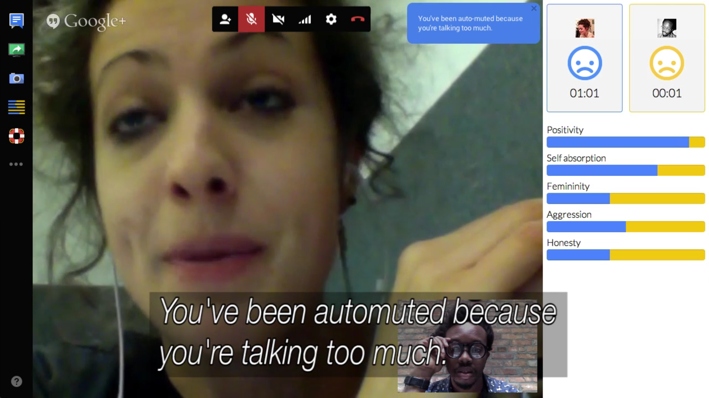

Février 2018
Converser à l’ère de l’autocomplétion
Analyse des enjeux de l’autocomplétion par la relecture critique de trois aspects du design d’interaction : l’utilisabilité, la « technologie calme » et le « design invisible ».
Tutoré par Nicolas Nova HEAD Genève, 2018
Mémoire de fin d’études, Master of Arts HES-SO en Design, orientation Media design - Haute École d’Art et de Design (HEAD), Genève
Les mots en italique entre (parenthèses) sont utilisés pour clarifier la référence à des mots anglais pour lesquels un équivalent français n’est pas évident.
Regime of computation (Hayles 2005), Age of the algorithm (Finn 2017), ou encore “logicialisation” de la société (Citton 2015), autant de termes pour désigner un même phénomène : la place grandissante du logiciel [software] dans la société, à une échelle importante et dans des domaines variés : travail, finance, relations sociales etc. Une ère dominée par la figure de l’algorithme comme structure ontologique de compréhension de l’univers (Finn 2017, 21).
Une incarnation du logiciel dans la vie quotidienne concerne la multiplication des assistants personnels ou de ce qu’on pourrait nommer des machines sociales (Hendler and Mulvehill (auth.) 2016, 10), au sens d’ordinateurs qui ont la capacité d’interagir dans un espace social traditionnellement réservé aux humains. C’est le cas des applications de messagerie (email), de messagerie instantanée (Messenger, Whatsapp et autres) ou encore des assistants personnels (Siri, Alexa…). Plus que de simples intermédiaires, ces services impliquent de nouvelles manières d’écrire, d’échanger, et finalement, de converser. Ces nouvelles manières de s’exprimer sont permises entre autres par des fonctionnalités telles que l’autocomplétion.
L’autocomplétion désigne la fonctionnalité informatique consistant à compléter les mots qu’un usager a commencé à saisir. C’est une fonctionnalité majeure sur le web et dans les applications de conversation à distance. Elle devient une caractéristique incontournable dans le design de l’expérience utilisateur, en témoignent la multiplication de widgets1 comme autocomplete du populaire jQueryUI (collection d’outils à destination des développeurs pour faciliter la création de sites internet). Synonyme de complètement, complètement automatique ou encore saisie intuitive ou saisie prédictive, le terme d’autocomplétion a été choisi ici pour sa proximité avec le terme anglais autocomplete, largement employé dans le monde de la programmation informatique.
Derrière son allure insignifiante, l’autocomplétion est une fonctionnalité que l’on utilise quotidiennement et qui touche un aspect intime de notre vie : les correspondances que l’on a avec nos proches via nos appareils électroniques. En même temps, c’est aussi un exemple de technologie qu’on ne remarque pas. On rit parfois d’une suggestion inappropriée, on s’étonne (ou s’effraie) de la justesse d’une proposition qu’on avait sur le bout de la langue. Mais notre compréhension du système est généralement limitée, c’est une fonctionnalité un peu discrète (ou totalement invisible) et un peu futile (ou peu magique).
On peut être tenté de penser que l’autocomplétion est avant tout un problème technique, un problème d’ingénierie : comment prédire les mots que l’utilisateur va écrire ? L’enjeu serait avant tout d’améliorer la précision des prédictions, et c’est probablement pourquoi toutes les interfaces (Whatsapp, Messenger, Google Allo…) se ressemblent fortement : l’esthétique est interchangeable; et l’expérience utilisateur est standardisée. On pourrait également penser que l’enjeu, c’est la compréhension du langage naturel par les machines. En 1950, en définissant un ordinateur intelligent comme un ordinateur capable d’imiter la conversation humaine de manière suffisamment convaincante, le test de Turing (Turing 1950) donne à la compréhension du langage une place prépondérante dans le champ d’étude qu’on appellera bientôt intelligence artificielle. Quelques années plus tard, Joseph Weizenbaum épate le monde scientifique avec ELIZA, un programme informatique rudimentaire qui simule un psychothérapeute avec lequel un interlocuteur humain peut converser via un clavier (Weizenbaum 1981, 121–33).
Malgré les nombreuses désillusions qui ont marqué l’histoire de la compréhension du langage par les ordinateurs (Weizenbaum 1981, 5–11), construire des chatbots ou des robots capables de discuter de manière autonome semble plus populaire que se pencher sur l’emprise croissante des algorithmes sur le langage des humains. Pourtant, il y a à cette intersection un enjeu qu’on peut placer dans le champ du design d’expérience et d’interface.
Que ce soit de manière fortuite ou délibérée, les outils numériques modèlent notre manière de parler. Pour prendre un exemple récent, Tarleton Gillespie parle de l’instauration d’une “négociation tacite” [tacit negociation] (Gillespie (ed.), Boczkowski (ed.), and Foot (ed.) 2014, 184) entre les usagers et les algorithmes, c’est-à-dire que les usagers adaptent – délibérément ou non – leur comportement pour tirer parti de l’algorithme. On ajuste son phrasé pour se rendre plus intelligible par Siri, on choisit consciencieusement des hashtags pour que son contenu soit affiché dans le fil d’actualité, on rédige son site web avec des termes “search engine-friendly.”2
Parce que l’autocomplétion impacte notre manière de parler et d’échanger, et que celle-ci est un élément clé dans la gestion de nos relations sociales, le design de tels systèmes implique une démarche particulière de design d’interaction.
Le design de tels systèmes, c’est-à-dire les décisions relatives à leur aspect et à l’interaction avec l’usager, se place dans le champ du design d’expérience et d’interface [user experience, user interface]. Mais est-ce que les concepts sur lesquels s’appuie le design de l’expérience utilisateur sont adaptés au design des systèmes d’autocomplétion ?
En premier lieu, le design de tels systèmes n’est pas directement centré sur la résolution d’un problème : nous savons écrire sans autocomplétion. On peut se dire qu’elle est un outil pour nous aider à écrire mieux ou plus vite, mais peut-être pas seulement. En second lieu, c’est une technologie utilisée quotidiennement et qui empiète sur un aspect personnel de nos vies, les conversations avec nos proches. Cette relation particulière implique que l’usager perçoive les effets de cette technologie sur ses actions : il doit remarquer qu’il utilise un système automatisé. Enfin, l’expérience que propose un système d’autocomplétion est étroitement liée à la complexité de son fonctionnement. Or la complexité est souvent vue comme un obstacle à une expérience utilisateur réussie.
Ces trois caractéristiques s’accordent difficilement avec trois notions fréquemment associées au design d’interaction : l’utilisabilité [usability], l’idée de technologie calme [calm technology] et celle de design invisible [invisible design]. C’est pourquoi pour analyser les enjeux de l’autocomplétion, ce mémoire vise à faire une relecture critique de ces trois notions.
Tout d’abord, j’expliquerai pourquoi l’évolution du fonctionnement technique des systèmes d’autocomplétion, notamment grâce aux algorithmes de machine learning, nécessite de repenser la manière dont on les conçoit (partie 1). Ensuite, je développerai trois idées qui s’opposent aux trois citées précédemment : celles d’un design qui pousse à l’inventivité, d’une technologie qui est un peu perturbante, et d’une interface qui est visible (parties 2 à 4). Au centre de ces thématiques se trouvent deux grandes questions : comment le design d’interface peut rendre intelligible comment un système fonctionne ? Comment penser des formes de technologie qui ne sont pas juste auxiliaires, mais provocatrices, excitantes ? La dernière partie sera dédiée à un questionnement plus large sur la collaboration humain-machine, et à la définition de la notion de technologie pimentée [chili technology] comme alternative aux tendances évoquées dans les parties précédentes (partie 5). Enfin, une annexe présentera des exemples d’application des principes évoqués au cours du mémoire, dans le cadre d’une application de messagerie fictionnelle.
Ce mémoire n’est pas une contestation unilatérale des principes ou des mouvements évoqués, mais plutôt une invitation à sortir de la rhétorique de “l’invisibilité” ou de “l’intuitivité” qu’on attribue au design d’interaction. Ce changement de perspective est là pour réimaginer les interactions humain-machine dans une optique où l’humour, la provocation et l’excitation sont au centre des préoccupations.
Dans le champ de la téléphonie mobile, l’autocomplétion est présente depuis plusieurs années en tant qu’aide à la saisie. À la fin des années 90, la majorité des terminaux mobiles possèdent un clavier à 12 chiffres, proche de celui des cadrans téléphoniques. Il est conçu avant tout pour la saisie de numéros de téléphone et pas pour celle de textos. Pour pouvoir y saisir du texte, chaque touche possède plusieurs lettres associées (par exemple le ‘2’ sert aussi à saisir les lettres ‘a’, ‘b’ et ‘c’), ce qui implique un problème de désambiguïsation [disambiguation] lors de la saisie : comment savoir si l’usager a voulu taper un ‘a’, un ‘b’ ou un ‘c’ ? Les développeurs ont recours à des méthodes d’entrée pragmatiques, comme le multi-press (presser une fois pour ‘a’, deux fois pour ‘b’, trois fois pour ‘c’) ou le two-keys (presser ‘abc’ puis ‘1’ pour ‘a’, ‘abc’ puis ‘2’ pour ‘b’, etc.)3. De manière plus originale, des systèmes comme le T94 adoptent une approche linguistique basée sur un dictionnaire comportant tous les mots de la langue (Grover, King, and Kushler 1998). Bien que plusieurs lettres soient associées à une même touche, une séquence de touches ne pourra produire qu’un petit nombre de mots5. En combinant cela au fait que les mots ont des fréquences différentes (‘tu’ est beaucoup plus fréquent que ‘accordéon’), on obtient un système capable de prédire quel mot a le plus de chance d’être écrit. C’est d’ailleurs le terme de “texte prédictif” [predictive text] qui est adopté pour désigner cette technologie de complétion.
Bien que visant à résoudre le problème d’ambiguïté de la saisie, le T9 introduit une méthode de saisie qui comporte des similarités avec les systèmes d’autocomplétion actuels, c’est-à-dire parier sur un mot en se basant sur des données (un dictionnaire) et des probabilités (les fréquences).
Aujourd’hui, on peut distinguer deux types d’autocomplétion. La première est celle qui vient compléter les mots que l’on a commencé à saisir. C’est la descendante directe de systèmes comme le T9 et des correcteurs orthographiques. Elle est plutôt une aide à la saisie, corrige les fautes d’orthographe et augmente la vitesse d’écriture.
La seconde est celle qui vient suggérer des mots ou des phrases complètes, en se basant sur le début de notre phrase ou de celle de notre interlocuteur. Elle est plus proche d’une aide à l’écriture, dans la mesure où elle est plus envahissante. Ce type d’autocomplétion tente de prédire ce que l’on veut dire en se basant sur les mots déjà écrits, et sur les fréquences d’association des mots entre eux (par exemple une phrase qui commence par “Merci” a plus de chances d’être suivie de “beaucoup” que de “accordéon”). Ces fréquences sont calculées grâce à une approche statistique de la langue qui consiste à analyser des ensembles de milliers de textes appelés corpus.
Le recours aux statistiques et aux probabilités afin de prédire ou d’anticiper les actions d’usager relèvent d’un champ d’étude de l’intelligence artificielle particulièrement en vogue, le machine learning6, qu’on peut traduire en français par apprentissage automatique. Ces algorithmes font fonctionner les assistants personnels comme Siri et produisent les recommandations personnalisées de Spotify ou d’Amazon. Ce sont des programmes qui cherchent à prédire un comportement futur en se basant sur une analyse statistique des comportements passés. Ils apprennent du comportement de l’usager, et évoluent en fonction de ses habitudes. Le corollaire d’une telle technique consiste en une personnalisation grandissante de l’expérience utilisateur : le programme “s’adapte” à chaque individu.
La place centrale qu’a pris la prédiction dans les systèmes d’autocomplétion fait qu’on peut les définir comme des systèmes de recommandation pour l’écriture. C’est-à-dire, des systèmes qui cherchent à prédire la préférence d’une personne pour un mot, une phrase, un emoji ou une idée.
Un exemple-type de système de recommandation pour l’écriture, est l’application de messagerie instantanée développée par Google, Google Allo. Cette application de messagerie “intelligente” suggère des réponses-type en fonction des habitudes d’écriture. Elle retient par exemple si vous êtes une personne plutôt “dac” ou “ok”, et intègre des suggestions à l’intérieur même des conversations grâce à un assistant semblable à Siri. Google Allo n’est pas la seule application à aller jusqu’à suggérer des mots ou des réponses préétablies. La messagerie en ligne Gmail et Facebook les utilisent aussi.
Dans le cas de ces deux dernières applications, les suggestions sont basées sur une analyse statistique des réponses écrites non pas par l’usager lui-même mais par les usagers en général. S’il est difficile de savoir exactement comment ces réponses sont produites, il est probable qu’elles ne résultent pas d’un algorithme autonome, car elles ne sont présentes que dans le cas de situations standardisées, par exemple “Merci” ou “Bien reçu”. Néanmoins, on peut voir dans ces nouvelles fonctionnalités une porte ouverte vers l’usage d’algorithmes de machine learning pour faire de la recommandation conversationnelle.
Comprendre les grands principes de fonctionnement d’un système de recommandation permet de mieux apprécier leurs spécificités, leurs contraintes et leurs avantages, et ainsi de pouvoir les concevoir d’un point de vue de design d’expérience. Sans entrer le détail, on peut distinguer deux grandes catégories de système de recommandation : ceux basés sur le contenu et ceux dit “collaboratifs.”7 Le schéma ci-dessous donne un aperçu de leurs caractéristiques.
Dans le cas de l’autocomplétion, on pourrait par exemple différencier un système basé sur le contenu, qui recommanderait des mots liés par une relation de sens ou de syntaxe (par exemple un synonyme connu grâce à un dictionnaire) et des mots liés par un comportement collectif (par exemple des mots souvent associés par l’ensemble des usagers).
Si l’on commence à désigner les systèmes d’autocomplétion comme des systèmes de recommandation pour l’écriture, alors on peut se poser la question de comment les problèmes qui se posent actuellement aux systèmes de recommandation peuvent les impacter. Sans en faire une liste exhaustive, on peut citer trois grandes questions : celle de la régularisation de la langue, du déterminisme qu’implique un système qui s’autoalimente et la gestion délicate des données personnelles.
Comme mentionné plus haut avec la notion de “négociation tacite”, on adapte son langage quand on utilise des systèmes électroniques. Mais les apps de messagerie modèlent notre manière de parler en retour. Se basant sur une approche statistique de la langue, l’autocomplétion peut réduire sa richesse en poussant les usagers à employer les mots qui sont statistiquement les plus fréquents. Sans être en mesure de prouver une transformation générale de la langue par l’autocomplétion, on peut émettre l’hypothèse d’une tendance générale vers une expression linguistique plus régulière et moins idiomatique. Une expression qui défavoriserait des aspects comme les fautes d’orthographe, le registre de langue familier, ou les mots régionaux. C’est ce que Kaplan appelle le “capitalisme linguistique” (Kaplan 2014) : Google a un intérêt financier à ce que les requêtes des utilisateurs soient les plus compréhensibles. Sous cet angle, l’objectif et l’effet des outils de correction et d’autocomplétion est d’homogénéiser la langue.8
Dans ce cas, la diversification de la langue par l’autocomplétion peut être vue comme un contrepied à cette uniformisation. Par exemple en ne sanctionnant pas systématiquement les fautes d’orthographe, ou en proposant des mots insolites.
But when algorithms cross the threshold from prediction to determination, from modeling to building cultural structures, we find ourselves revising reality to accommodate their discrepancies. (Finn 2017, 50)
Plus on se fie à des recommandations, plus elles nous façonnent. Il y a toujours le risque que les algorithmes quittent le monde de la prédiction pour entrer dans celui de la détermination, en créant un système qui s’autoalimente. Le militant internet Eli Pariser alerte contre le risque que les recommandations isolent les usagers dans une “bulle de filtres” [filter bubble] (Pariser 2011). Selon lui, suggérer des contenus à un usager en se basant sur son comportement passé reviendrait à le confiner dans sa propre bulle culturelle et idéologique. Ce que vise Pariser c’est avant tout la personnalisation insidieuse du web. Par exemple, les usagers de Facebook ne sont pas explicitement avertis que leur comportement (historique de recherche, publications aimées…) déterminent leur fil d’actualité. Si une personne aime régulièrement les publications d’une personne en particulier, alors elles apparaîtront plus fréquemment dans son fil, et elle sera donc plus à même de les aimer de nouveau.
De la même manière, est-ce qu’une personne qui utilise régulièrement des termes violents se verra par conséquent recommander des termes injurieux, qui pourront l’entrainer dans un cercle vicieux ? On peut soulever cette question, et en même temps on peut voir dans l’autocomplétion une opportunité pour justement élargir cette bulle culturelle. Si à l’inverse l’on imagine par exemple suggérer des mots désuets à des jeunes, ou bien des mots issus de l’argot des jeunes à des personnes âgées.
Le revers de la personnalisation, c’est la collecte massive de données personnelles. Ces données sont récupérées, stockées, analysées. Elles sont utilisées pour prendre des décisions qui dépassent la réalité qu’elles nous laissent entrevoir, et parfois avec des conséquences dramatiques. Par exemple, Virginia Eubanks dénonçait récemment des systèmes automatisés aux États-Unis ayant pour tâche de répartir l’aide sociale ou évaluer un risque d’être victime d’abus sexuels (Eubanks 2018). La question de la protection de la vie privée est donc centrale. Il faut garder du recul sur les informations perçue au travers de les profils et de les comportements, et garder à l’esprit qu’on ne peut pas rationaliser la personnalité d’une personne aux données collectées sur elle. Donner aux gens accès aux données collectées sur eux, et la capacité de les modifier est donc essentiel.
Et si l’évolution technologique était telle qu’elle nécessite de penser différemment la manière dont on conçoit l’expérience des systèmes basés sur des algorithmes de machine learning ? Si les enjeux centraux n’étaient pas tant l’intuitivité ou la facilité d’usage, mais la capacité à permettre la découverte ou à dépasser ses limites ?9
Aujourd’hui, les applications de messagerie (Whatsapp, Messenger, Telegram…) proposent une interface et une expérience standardisée, elles se ressemblent tant qu’elles semblent être des variations d’une même application. Les causes de ce problème sont inévitablement multiples : complexité des systèmes, problèmes liés à l’interdisciplinarité. Néanmoins, plusieurs hypothèses issues de l’histoire du design peuvent se révéler problématiques : le travail de designer se résumerait à la résolution d’un problème (notion d’utilisabilité), la technologie ne devrait pas empiéter sur la vie “réelle” (technologie calme), le bon design est celui qui ne se verrait pas (design invisible). Chacun des chapitres suivants est la relecture d’une de ces trois caractéristiques.
L’utilisabilité peut se définir par la capacité d’un objet à être utilisé de manière efficace (atteindre le but prévu), efficiente (atteindre ce but avec un effort minimal) et générer une satisfaction de l’utilisateur (être agréable à utiliser)10.
C’est un concept central dans l’histoire du design : un bon objet est celui qui résout un problème et la qualité d’un design se mesurerait à la l’efficacité avec laquelle il atteint ce but.
Nous verrons d’abord pourquoi il faut se méfier de vouloir exploiter naïvement la technologie comme une réponse à des problèmes complexes, puis pourquoi cette quête de l’efficacité n’est pas pertinente dans le champ de la communication interpersonnelle.
On voit apparaître dans la multiplicité des objets connectés, de nombreux produits qui se targuent de vouloir régler des problèmes sociétaux. Simples gadgets ou appareils complexes, leur point commun est que leurs auteurs sont pleins de bonnes intentions, ils viennent avec une sincère volonté de rendre le monde meilleur. Mais être bien intentionné n’est pas suffisant pour régler des problèmes complexes, et ces projets finissent souvent par être maladroits, embarrassants, voir dangereux.12 Pour illustrer cela, on peut comparer deux projets qui s’inscrivent dans le même champ d’action : l’assistance à la conversation.
Le premier projet vient du laboratoire d’effective computing (littéralement information efficace) du MIT Media Lab, MACH, My Automated Conversation coacH (“MACH - My Automated Conversation coacH,” n.d.), “mon coach automatisé pour la conversation”. C’est un système qui a pour but d’améliorer sa posture et sa manière de parler lors des conversations en face-à-face. L’expérience consiste à converser avec un personnage 3D qui répond et réagit en temps réel. Il peut en outre prendre des initiatives comme interrompre une personne qui serait trop bavarde. Après la discussion, le logiciel fournit un bilan détaillé de l’interaction : la fréquence des sourires, des hochements de tête, des modulations de la voix, la quantité de “mots faibles” (très, bien, en fait…), le débit de parole.
Le logiciel énonce les objectifs à atteindre pour améliorer sa performance et fournit des graphiques pour comparer les différentes sessions d’entraînement. Le projet est présenté comme une aide pour améliorer ses compétences sociales, notamment avec des vidéos avant/après qui illustrent les réussites du dispositif das le contexte d’entretiens d’embauche.
Le second projet, us+, par les artistes Lauren McCarthy et Kyle McDonald, est une application de vidéoconférence Google Hangouts. Son objectif affiché est d’optimiser la conversation en analysant les expressions faciales et le contenu linguistique grâce à des algorithmes pouvant extraire des tendances comportementales comme la positivité, l’agressivité ou la féminité. Cette analyse est retransmise en direct à l’utilisateur avec des graphiques en barres. En plus de cette visualisation, l’application affiche des notifications qui donnent des conseils comme “Tu parles beaucoup trop”, et peut effectuer des actions concrètes comme couper le son. 
Bien que s’appuyant sur des études scientifiques similaires (analyse des sentiments, comparaison des temps de parole) ces deux projets illustrent deux manières d’aborder le sujet sensible de l’amélioration des compétences sociales grâce à la technologie. Le premier se revendique comme une solution presque thérapeutique pour les gens qui ont des difficultés avec les relations sociales, dans des différents contextes comme un entretien d’embauche ou un rendez-vous galant. Derrière ce projet se trouve une vision du comportement humain comme étant rationnel, quantifiable et contrôlable grâce à des paramètres. Comme dans un jeu de gestion, on doit atteindre son but (communiquer mieux) en ajustant différents facteurs. Sauf que les règles qui régissent le “monde réel” sont plus complexes, plus imprévisibles, et espérons-le, moins déterministes que celles d’un jeu vidéo. À l’inverse, us+ se présente comme un outil critique, soulignant la dépendance que l’on a envers des logiciels hors de notre champ de compréhension, et ce même dans des aspects intimes de notre vie comme dans nos communications informelles.13 C’est un projet qui est là pour poser la question ouverte de la place et les limites que l’on souhaite donner à des logiciels qui ont un contrôle grandissant sur la gestion de notre vie quotidienne. C’est l’opposition entre une vision qui se pose la question du comment et une autre qui se pose celle du pourquoi.
Si le design doit viser à l’efficacité, alors on peut se poser la question de la signification de “communiquer efficacement”. De nombreux outils nous font miroiter un “discours optimisé” : Ginger promet à l’usager “d’écrire mieux et plus vite”, Hemingway aide à produire une écriture “claire et audacieuse”, l’extension Grammarly s’engage à la rendre “claire, efficace et sans erreur”.
Cette dernière, Grammarly, est une application et une extension pour navigateur qui souligne en temps réel les fautes d’orthographe, de grammaire et de style. Ces corrections stylistiques incluent par exemple la limitation des répétitions et la proposition de mots plus percutants [compelling]. Comme extension, elle peut superviser tout ce que l’on écrit sur le web, des emails aux statuts sur les réseaux sociaux. Chaque mot “problématique” est souligné, et une explication sur le problème qu’il pose est accessible au survol. L’extension se revendique comme un assistant pour l’écriture, promettant de la rendre plus claire et communicative.
Le problème de l’optimisation promise par ces applications, c’est qu’elle pousse à la standardisation en ramenant toutes les formes d’écriture (email, statut) vers un mode argumentaire.
En fait la clarté est un attribut purement rhétorique, elle n’est pas une qualité générale du langage, possible dans tous les temps et dans tous les lieux, mais seulement l’appendice idéal d’un certain discours, celui-là même qui est soumis à une intention permanente de persuasion. […] Bien écrire – désormais seul signe du fait littéraire – c’est naïvement changer un complément de place, c’est mettre un mot “en valeur”, en croyant obtenir par là un rythme “expressif”. Or l’expressivité est un mythe : elle n’est que la convention de l’expressivité. (Barthes 1953)
Comme l’explique Barthes, la notion même de clarté ou d’expressivité d’un discours n’est pas une propriété fondamentale du langage. C’est une propriété héritée de la rhétorique, qui occulte d’autres aspects de la communication, par exemple la spontanéité. La “bonne manière de parler” est simplement une convention, qu’il est souvent bon de connaitre, mais qui ne devrait pas être vue comme un but en soi. Ces applications ont aussi une tendance à induire une confusion entre la forme et le contenu. Elles présentent le contenu comme une matière malléable qui peut se mouler dans des formes préétablies14.
Si l’argument de la “communication efficace” n’est pas univoque, doit-on pour autant se désespérer de trouver un intérêt à la conversation assistée par ordinateur ? La réponse se trouve peut-être dans la capacité d’un logiciel à déranger les habitudes des usagers, et c’est ce nous allons voir dans le prochain chapitre.
La notion de “technologie calme” [calm technology] est introduite en 1995 par Mark Weiser et John Seely Brown dans le texte Designing Calm Technology (Weiser and Brown 1995). Ces deux figures, occupant alors des postes à responsabilité au XEROX Parc, et notamment Weiser, considéré comme le père de l’informatique ubiquitaire, font le constat que les technologies de l’information sont de plus en plus invasives et accaparent trop l’attention. Contre cette tendance, ils expriment leur souhait d’une technologie calme, c’est-à-dire qui n’accapare pas explicitement l’attention de l’utilisateur, et se situe en périphérie de celui-ci.
Mais les auteurs ne proposent pas tant de limiter la place des systèmes informatiques dans la vie quotidienne, ils proposent d’atténuer leur présence en les rendant moins perceptibles. Ils ne questionnent pas tant l’envahissement de la technologie, mais l’attention qu’elle requière.
Nous verrons tout d’abord pourquoi l’idée d’une technologie qui contraint l’usager peut être attrayante, puis nous remettrons en question l’idée de reléguer la technologie en arrière-plan. Enfin, nous verrons pourquoi ce n’est pas un problème de déranger l’usager avec des détails techniques.
Dans le chapitre précédent, nous évoquions les limites de la vision de la technologie comme solution à la résolution d’un problème [problem solver], et la vacuité de l’idée de “communication efficace”. De son côté, Weiser défend l’idée que les objets électroniques ne devraient pas gêner des tâches pour lesquelles ils ne sont pas mandatés. Et si, au contraire, on considérait qu’ils peuvent nous surprendre en leur laissant de l’espace pour intervenir justement là où on ne les attend pas ?
Tout designer a déjà entendu cette maxime à un moment de son parcours : les contraintes sont créatives. Ne pas avoir un outil parfaitement adapté peut être agaçant, mais peut aussi pousser à l’ingéniosité et générer des usages inattendus. Les contraintes obligent à remettre en question ses habitudes et à imaginer des moyens créatifs de les contourner. Des créations d’Oulipo au Conditional Design du Studio Moniker (Maurer et al., n.d.), de nombreux artistes et designers se sont appropriés la contrainte comme processus de création. Converser par messagerie, c’est avant tout écrire, une activité créative qui a toutes les raisons d’être réceptive à la contrainte. Les deux projets présentés ci-dessous sont deux outils d’écriture atypiques qui utilisent la contrainte comme point de départ.
Dans son projet 100x1000, l’artiste Sterling Crispin propose d’écrire un court texte de cent mots avec uniquement les mille mots les plus courants de la langue anglaise. Si la personne saisis un mot qui n’appartient pas à ce corpus, il est effacé aussitôt. Son programme donne un protocole d’écriture qu’il serait épineux de suivre avec des moyens traditionnels comme une liste imprimée de mots à vérifier. 100x1000 autorise une forme d’écriture qui ne serait pas envisageable sans l’outil informatique : il en tire pleinement parti.
The Most Dangerous Writing App est une application web qui a pour but d’aider à maintenir un rythme d’écriture soutenu. L’usager paramètre un temps d’écriture (par exemple cinq minutes), durant lesquelles il doit écrire en permanence. S’il arrête de saisir du texte pendant plus de cinq secondes, tout le texte déjà tapé s’efface et est définitivement perdu. Par un protocole un peu radical et presque un peu sadique, l’application établit une situation d’écriture inédite. Il permet de trouver des manières d’écrire qui ne seraient permises par un logiciel de traitement de texte standard.
Ces projets sont deux exemples d’outils d’écriture qui utilisent la contrainte comme prétexte pour encourager à écrire. Ce sont de petits projets, au sens qu’ils ne sont pas complexes techniquement et qu’ils ne peuvent servir que dans des situations particulières. Néanmoins, ils permettent d’entrevoir la pluralité des expériences que pourraient proposer des logiciels de traitement de texte revisités.
Une notion au centre de la calm technology est celle de “périphérie”. Weiser recommande de concevoir des objets électroniques qui sont présents de manière ambiante15, et qui s’approprient le moins possible l’attention explicite de l’utilisateur. Une illustration de cette idée est celle du thermostat, qui une fois configuré ne nécessite plus d’intervention pour maintenir la température souhaitée, ou encore le coffre de la voiture qui s’ouvre avec un simple mouvement de la jambe. Concrètement, un moyen souvent évoqué est de recourir à des capteurs, qui vont recueillir des informations “en arrière-plan”, et ainsi laisser à l’usager toute son attention. Les deux prochains chapitres expliquent pourquoi cette idée n’est pas compatible avec l’utilisation massive de données personnelles.
La personnalisation, dans le sens de l’adaptation d’un système aux habitudes de l’utilisateur, élément clé des systèmes de recommandation, repose précisément sur cette idée. Ces derniers se nourrissent de notre comportement quotidien implicite, comme retenir les mots employés fréquemment pour nous les proposer par la suite, ou encore identifier les contacts desquels nous sommes le plus proche pour nous suggérer qui est en ligne. Toujours en quête de métadonnées à analyser, ils considèrent des actions inconscientes comme des choix manifestes.
In other words, how are we to deal with a common problem faced by parents who often say to their children, Don’t do what I do; do what I say ? Obviously while learning by observation is a good way to learn about things in the world and actions to take in certain contexts, it is not enough to actually know why you are taking an action, or when you should take an action. (Hendler and Mulvehill (auth.) 2016, 158)
Cependant, comme le souligne Hendler dans son ouvrage sur ce qu’il appelle les “machines sociales”, que ce soit par manque d’expérience ou par erreur de jugement, on est tous amené à faire des actions que l’on n’approuve pas tout à fait ou que l’on ne considère pas comme nous représentant réellement. Entre ce que je suis, ce que je fais, et ce que je voudrais être, il y a des écarts qui peuvent être lourds de signification. Or la personnalisation ne prend pas en compte ces contradictions qui font partie du comportement humain. Le système voit ainsi ses usagers sous une identité simplifiée, caricaturale, pour des raisons qui peuvent être au mieux techniques, au pire tout à fait idéologiques16. C’est là un enjeu de la personnalisation : comment faire le tri entre les actions qui sont signifiantes et celles qui ne le sont pas, et qui peuvent même être contradictoires avec la personnalité réelle d’un individu.
C’est pourquoi un point primordial à considérer est celui de concéder à l’usager le contrôle sur son identité. Cela impose de ne plus avoir une personnalisation autosuffisante, mais guidée par l’usager lui-même. Il s’agit donc de promouvoir des systèmes hybrides, qui combinent les données collectées avec les injonctions explicites de l’utilisateur final.
Nous venons de voir qu’il faut relativiser les données récupérées sur les usagers, car elles peuvent être loin de représenter leur personnalité. Mais parfois, l’effet inverse peut se produire : elles peuvent traduire des détails sensibles sur notre vie.
Ces données “personnelles” peuvent être les informations que l’on saisit soi-même sur ses profils de réseaux sociaux, comme l’âge, le lieu de vie ou la profession. Elles peuvent également être des indications sur le comportement d’utilisation, par exemple les personnes avec lesquelles on parle souvent, ou encore les heures de fréquentation d’une application. Ces données comportementales, nous avons tendance à oublier que nous les cédons gracieusement contre la gratuité de services comme Google ou Facebook.17 Or, elles trahissent des aspects intimes de notre vie. On ne sait pas avec exactitude comment toutes ces données sont utilisées, il est donc difficile d’estimer quelles informations sont sensibles. Mais de telles quantités de données peuvent traduire plus qu’on ne pourrait l’imaginer. L’écrivaine Joanne McNeil évoque par exemple comment les “souhaits d’anniversaire” [birthday wishes] sur Facebook pourraient être des indicateurs de la proximité affective que l’on a avec un “ami” (McNeil 2014), et ainsi être de précieuses ressources pour rapporter de l’argent à l’entreprise grâce à la vente d’espace publicitaires. Ces conclusions ne sont pas directement vérifiables, et pourtant elles sont loin d’être improbables. En effet, je suis plus réceptive à une annonce pour des cadeaux à l’approche de l’anniversaire d’un ami. Et un publicitaire est prêt à payer plus cher pour une campagne qui va être vue par mille personnes qui s’apprêtent à dépenser que par mille personnes prises au hasard.
Dès lors, on peut interpréter de la même manière les fonctions de réponse automatique (que l’on peut considérer comme une forme d’autocomplétion) inclues dans Gmail. Dans la situation (réelle) présentée ici, quelle différence de sens y a-t-il entre “I don’t have it.” et “I don’t, sorry.”, si ce n’est que la première est plus sèche, et la seconde plus aimable ? Si je choisis la première, mon interlocuteur sera-t-il interprété comme un collègue que je n’apprécie pas trop ? Et si je choisis la deuxième, sera-t-il considéré comme une personne avec laquelle j’ai des relations amicales ?
On pourrait aller encore plus loin et spéculer sur ce qui pourrait être connu de nous dans le cas de l’analyse de conversations privées sur une application comme Messenger. La fréquence des contacts, l’usage de mots particuliers ou de smileys sont autant de facteurs qui révèlent avec précision la nature de la relation entre deux personnes (familiale, amicale, amoureuse…).
Une entreprise comme Google ne communique pas avec précision sur comment elle utilise nos données, et pourtant c’est grâce à elles qu’elle gagne de l’argent. De ce point de vue, être en mesure de pouvoir les consulter, connaître leurs implications, les modifier et les supprimer de manière simple répond à une question d’éthique.
De ce point de vue, l’idée d’une technologie qui capte en arrière-plan des informations sur ses usagers est problématique.
Nous venons de voir les problèmes que peut soulever l’idée de calm technology, notamment dans le cadre de systèmes manipulant des données personnelles. Souvent affiliée sur le plan idéologique avec l’idée de “calm technology”, la notion de “design invisible” ou le mouvement NoUI (littéralement pas d’interface utilisateur), nouvellement popularisés par des ouvrages comme The Best Interface is No Interface (Krishna 2015), sont plusieurs termes qui désignent une même tendance : celle selon laquelle le bon design est celui qui ne se voit pas, celui qui génère le moins de friction possible avec l’utilisateur18. Ce mouvement considère l’interface graphique [GUI, Graphical User Interface] comme une couche additionnelle à l’expérience utilisateur, et qui est souvent superflue.
Or, la multiplication des assistants personnels et la prolifération d’outils de quantified self oriente de manière significative nos prises de décisions. Ces assistants ne nous disent pas quoi faire, pas plus qu’ils ne décident à notre place, mais l’on se repose de plus en plus sur eux pour ordonner notre vie de tous jours. Pour cette raison, la compréhension du système par les usagers est primordiale et une interface visible est une étape clé dans l’élaboration de cette “médiation technique”.
Ce mouvement est régulièrement critiqué, on peut par exemple citer Timo Arnall, qui publiait en 2013 un article dans lequel il expliquait pourquoi l’invisibilité ne devait pas être vue comme un but en soi. Notamment parce qu’elle propageait un mythe de l’immatérialité des technologies numériques, et ignorait l’histoire du design et l’existence d’une culture de l’interface19. Ici, nous allons tout d’abord questionner un principe du mouvement NoUI “Tirer parti des ordinateurs au lieu de les servir”, en présentant les bénéfices d’une adaptation de l’usager à la logique computationnelle. Puis nous expliquerons pourquoi l’idée d’invisibilité est particulièrement problématique dans l’ère du machine learning.
Parmi les principes évoqués dans The Best Interface is No Interface, il y a celui selon lequel ce n’est pas aux humains de s’adapter aux ordinateurs, mais aux ordinateurs de s’adapter aux humains. Et si, à l’inverse, encourager les usagers à s’adapter à leurs outils, c’était leur donner la capacité de mieux les comprendre et de construire les conditions nécessaires à une appropriation plus forte de la technologie par les gens qui la côtoient au quotidien ?
Pour illustrer son propos, Krishna prend l’exemple du remplissage de formulaires en ligne. Il évoque ce moment agaçant, quand on ajoute des tirets, des espaces ou des points entre les nombres de notre numéro de téléphone, et que le système nous indique par un message d’erreur qu’il ne doit contenir que des chiffres. Selon lui, il faut créer des systèmes qui savent reconnaître et interpréter ces “erreurs”, de manière à ne pas ennuyer l’utilisateur avec des détails techniques, qui n’ont de sens que pour la machine.
Néanmoins, contraindre l’usager à parler à l’ordinateur dans son langage, lui demander de s’adapter à son mode de compréhension, génère une connaissance plus juste de la réalité des capacités techniques des ordinateurs. Quand je rentre mon numéro de téléphone, mon ordinateur ne sait pas comment m’appeler, il ne fait qu’associer une suite de nombres à mon profil, sous le label “téléphone”. M’obliger à ne pas inclure d’espace quand je saisis mon numéro, c’est me rappeler que ce n’est pas mon numéro de téléphone que l’ordinateur comprend, mais bien une série de chiffres.
La nuance est mince, mais contribue à alimenter une incompréhension de la technologie par les gens qui l’utilisent pourtant au quotidien. Or, une technologie incomprise génère de la frustration et restreint la créativité. Une étude conduite il y a déjà une dizaine d’années montre que les problèmes posés par une mauvaise compréhension de la technologie incluent : de mauvaises suppositions sur les risques d’adoption de cette technologie; des attentes en termes de bénéfices qui sont en décalage avec la réalité des possibilités techniques; des difficultés à trouver des solutions quand intervient un problème avec celle-ci (Poole et al. 2008). Il cite l’exemple d’une personne qui pensait que les RFID étaient des traqueurs de position. Cette croyance populaire (que les auteurs nomment en anglais folk theories) le faisait s’inquiéter que des vendeurs ou des organisations gouvernementales utilisent des technologies basées sur le RFID pour l’espionner. Cette situation illustre comment un malentendu sur son fonctionnement peut avoir des conséquences considérables sur l’adoption d’une technologie. De plus, l’étude conclue que, même s’ils portent en eux de sérieuses inquiétudes face aux nouvelles technologies, les participants étaient réticents à faire remonter publiquement leurs doutes. Une des raisons avancées est qu’ils doutent de leur possibilité d’avoir leur mot à dire dans une évolution technologique qu’ils perçoivent comme inévitable.
By removing our knowledge of the glue that holds the systems that make up the infrastructure together, it becomes much more difficult, if not impossible, to begin to understand how we are constructed as subjects, what types of systems are brought into place (legal, technical, social, etc.) and where the possibilities for transformation exist (Ratto 2007).
Sur le même sujet, Matt Ratto souligne qu’une incompréhension de la technologie rend difficile, voir impossible une réflexion sur les possibilités de transformation de celle-ci. En ne montrant pas le fonctionnement d’un système, on retire aux gens leur habilité à le comprendre, le critiquer et le reconfigurer, c’est-à-dire leur habilité à imaginer que les choses soient différentes. Vu sous cet angle, le design “invisible” participe à creuser un fossé entre les professionnels qui créent les objets électroniques et les personnes qui les utilisent. On voit que les conclusions que l’étude témoignent d’un imaginaire technologique limité chez les usagers (mauvaise estimation des possibilités techniques, difficulté d’improviser en cas de problème). Dans ce contexte, donner les clés de compréhension d’un système en demandant une adaptation des usagers à la logique computationnelle rendrait possible un renouvellement de cet imaginaire. Les objets électroniques et les logiciels ne devraient pas être vus uniquement comme complexes (même s’ils le sont indéniablement), ni comme une matière figée, mais au contraire comme des entités en permanente évolution, questionnables, et qui peuvent être modelées de manière collaborative (Finn 2017, 7).
Les modèles statistiques à la base des algorithmes de machine learning parviennent, par l’analyse de grandes quantités de données, à souligner des corrélations invisibles pour un humain ordinaire. Ces liens mystérieux sont fascinants, ils captivent, bien qu’ils ne soient pas une source de connaissance explicable. À titre d’exemple, on peut penser aux “pics de rupture”, représentés par David McCandless & Lee Byron, appuyés sur les mises à jour de statut Facebook, qui montrent une hausse au début du printemps et deux semaines avant Noël[^5ee2]. Quelle explication donner à ce phénomène ? Difficile à dire. Si l’on peut s’amuser à faire des suppositions, il faut garder à l’esprit que ce ne sont que des hypothèses.
Pour illustrer cette problématique, on peut se pencher sur une étude exposant le problème posé par une faible intelligibilité des modèles basés sur du machine learning. “L’intelligibilité” correspond à la capacité à comprendre pourquoi le système prend une décision.
Cette étude se place dans le cadre de services de santé. Son but était de concevoir un modèle capable de déterminer les patients avec une haute probabilité de décès (PDD) par pneumonie de manière à les hospitaliser, et traiter ceux avec une faible probabilité en consultation externe (Caruana et al. 2015)20. Deux modèles sont envisagés : un basé sur des réseaux de neurones [neural networks], avec une précision plus élevée mais jugé trop risqué, et un second, basé sur des règles, moins précis, et qui sera choisi en définitive. Sans entrer dans des détails techniques21, ce second modèle permet explicitement, à l’inverse du premier, de voir les relations entre chaque valeur analysée et la PDD associée. Il révèle par exemple que statistiquement, être asthmatique est corrélé avec un faible niveau de PDD. À première vue, c’est une observation illogique. En fait, il s’avère que les patients atteints de pneumonie avec des antécédents asthmatiques sont généralement expédiés en unité de soins intensifs. Comme le pronostic pour ces patients est meilleur que la moyenne, leur chance de survie l’est aussi. Ainsi, la corrélation existe, mais il n’y pas de lien de causalité. Malgré sa puissance de calcul, l’analyse statistique ne différencie pas la réelle bonne performance du système médical et une supposée robustesse de la santé du patient. Si le modèle basé sur le réseau de neurones avait été choisi, il aurait pu délibérément suggérer d’envoyer un patient asthmatique en consultation externe au lieu des urgences. Cet exemple illustre la nécessité de ne pas avoir une confiance absolue dans des algorithmes dont on n’est pas en mesure de comprendre le fonctionnement.22
Dans un système d’autocomplétion basé sur du machine learning, une dérive pourrait par exemple se trouver si certaines associations statistiques de mots étaient révélatrices de préjugés. Par exemple, si les adjectifs associés à un pronom féminin étaient différents de ceux associés à un pronom masculin, et traduisaient une tendance à qualifier les femmes par leur physique et les hommes par leurs capacités. Ce ne serait pas un biais causé par le système d’autocomplétion, mais un biais qui existe dans le monde réel (Bian, Leslie, and Cimpian 2017) et qui serait ainsi prolongé. Grâce à une visibilité sur de telles corrélations, il est possible d’établir des rééquilibrages pour favoriser certains aspects de la langue. C’est par exemple le constat à l’origine d’une application de clavier initiée par Plan International, le sheboard (“A Mobile Keyboard by Plan International Boosts Girls’ Confidence,” n.d.). Ce clavier a pour spécificité un système d’autocomplétion qui suggère des mots issus de champs lexicaux qui vont contre les préjugés que l’on porte envers les femmes.
En ayant une visibilité sur comment les suggestions sont produites, on offre la possibilité de relativiser des résultats inappropriés, et d’élaborer des stratégies pour leur faire face.
Au cours des trois chapitres précédents, nous avons vu comment les logiciels changent, et pourraient changer notre manière d’interagir via la parole et l’écriture. Nous avons également vu quelles habitudes de conceptions instaurer pour tenir compte des spécificités des expériences basées sur des algorithmes. Ces habitudes s’articulent autour de trois points clés : en premier lieu, pousser à l’inventivité en privilégiant une approche critique et en relativisant l’idée que le design a pour but la résolution d’un problème. En second lieu imaginer des expériences plus surprenantes en valorisant des usages insolites de la technologie et en la mettant au centre de l’attention plutôt qu’en périphérie. Et enfin, ne pas voir l’interface comme un acte de polissage mais comme un moyen de rendre visible fonctionnement du système.
Dans cette dernière partie, qui sert de conclusion, nous élargirons le sujet sur la relation humain-machine en questionnant l’idée d’assistant personnel et en désignant la modularité et la paramétrabilité d’un logiciel comme des caractéristiques essentielles. Puis nous définirons l’idée de technologie pimentée comme une synthèse des points évoqués dans les chapitres précédents.
Les principes évoqués précédemment doivent nous amener à regarder les objets électroniques sous un regard qui n’est peut-être pas celui d’un assistant. Est-on obligé de penser l’assistance sous l’angle d’une visée utilitariste ? N’y aurait-il pas des alternatives ?
L’imaginaire que l’on associe aux “assistants personnels” est influencé par une vision anthropomorphique de l’intelligence artificielle. Comme nous l’avons évoqué dans l’introduction à propos du test de Turing et d’ELIZA, nous avons tendance à considérer qu’un ordinateur intelligent est un ordinateur qui se comporte comme un humain : qui est capable de parler, d’écrire, ou d’être émotif. Mais les appareils électroniques peuvent avoir un intérêt au-delà de cette image de l’humain “augmenté”. On peut voir l’autocomplétion non pas comme un assistant mais comme un outil créatif.
Le terme d’assistant induit une relation hiérarchique, un assistant nous est subordonné. Il est celui auquel on délègue une tâche, qu’on est souvent en mesure de réaliser, mais qu’on n’a pas envie de faire. Pourquoi ne pas penser cette relation plutôt comme une forme de collaboration ?
Dans une équipe, la compréhension mutuelle entre les deux parties est un facteur déterminant. Elle peut passer, comme nous l’avons vu dans la partie 4, par une interface qui laisse transparaître le fonctionnement du système. Mais elle peut aussi passer par des logiciels modulaires et aisément paramétrables, permettant des possibilités d’usage exponentielles. Par modulaire j’entends un logiciel sur lequel on peut venir greffer d’autres petits logiciels, de manière à enrichir ses fonctionnalités. Par paramétrable j’entends des possibilités de configuration étendues. Ces deux directions encouragent une diversité des fonctionnalités en laissant aux usagers eux-mêmes la possibilité de personnaliser leurs outils.
Ainsi, ce que dénonce David M. Berry, c’est bien le développement de certains types de machines (programmes) avec lesquelles nous ne pouvons strictement rien faire, ou peu faire, ou ne rien faire qui n’ait déjà été anticipé – des machines qui « rendent service » de façon si parfaitement programmée qu’aucune marge de manœuvre ne sera possible, mettant ainsi en défaut toute conduite technique. Contre l’automatisation issue des sciences comportementales, il nous faut donc œuvrer à rechercher et à créer des « marges d’indétermination » au sein de nos rapports aux machines. (Masure 2016)
Comme le souligne Anthony Masure, la collaboration humain-machine ne doit pas passer par des machines qui seraient de plus en plus autonomes et ne laissent pas de marge de manœuvre à l’usager; mais au contraire par des machines plus facilement manipulables. Si l’on commence à penser les “assistants” non pas comme des logiciels parfaitement conçus, à utiliser selon des critères prédéfinis, mais comme une base pouvant être étendue à l’infini par l’usager, alors on laisse une place à des usages originaux et inventifs.
Un modèle qui tire parti de cette modularité est celui des extensions [addons] pour navigateurs (Firefox ou Google Chrome par exemple). Une extension est un petit programme qui enrichit les fonctionnalités d’un navigateur. Ce n’est pas un logiciel ni une application en soit, mais un module que l’on peut greffer sur un logiciel existant pour étendre ses fonctions. Certaines extensions sont officielles et grand public (bloqueurs de publicité, calendriers, traducteurs). D’autres ressemblent plus à de petits hacks23, par exemple I’m not robot captcha clicker valide le captcha à la place de l’usager pour lui faire gagner quelques secondes, ou bien Disable Ctrl-Q empêche de fermer son navigateur par accident avec le raccourci clavier ‘ctrl+Q’. D’autres enfin sont des projets artistiques, voir activistes, par exemple loveMachine, qui envoie un “j’aime” à toutes les publications disponibles dans le fil d’actualité de Facebook pour compliquer la tâche des entreprises faisant de la publicité ciblée.
Les extensions peuvent provenir de sources variées, de développeurs professionnels comme amateurs, ce qui les rend porteuses d’une diversité impossible à trouver dans un logiciel classique.
En conclusion, je souhaiterais définir l’idée d’une technologie “pimentée”, comme alternative à celles évoquées dans les chapitres précédents.
Je ne considère pas que le monde de l’art et du design manque de termes spécialisés dont l’utilité est douteuse (Jacobi 2005)24. Cependant, lors de la définition du sujet de ce mémoire, j’essayais de l’articuler autour de la question de “comment les assistants personnels peuvent pimenter les relations sociales ?”. Le terme “pimenter” me semblait pertinent pour décrire une relation humain-machine dans laquelle la technologie serait considérée pour sa capacité à bousculer les habitudes, quitte à être un peu perturbante.
C’est à la même période que j’ai découvert une conférence dans laquelle Frédéric Kaplan évoque le futur de la robotique (Kaplan 2007). Il y présente différentes expérimentations mettant en scène AIBO, un robot-chien (ou chien-robot ?) de compagnie, développé par Sony, et à la conception duquel il a contribué. Ces différentes expériences mettent en lumière les relations de curiosité, de peur ou de complicité qui se créent entre le robot et l’environnement dans lequel il est déployé : les enfants, les autres animaux de compagnie ou le maître qui cherche à lui apprendre à reconnaître une balle. Il conclue sa présentation en évoquant l’idée d’une “technologie chili” [chili technology], qu’il place antipodes d’une technologie calme.
Maybe you want chili technology, maybe you actually think that technology is something a bit exciting that should push you a little bit. Not just being in the background and do just what you want to do, but sometimes, come in your life and have a kind of unexpected effect.
Il définit ce type de technologie par sa capacité à être un peu excitante, à surprendre et à faire naître des situations inattendues. Une forme de technologie qui ne viendrait pas seulement résoudre un problème, mais agrémenter la vie de tous les jours. C’est autour de cette base et des idées évoquées dans les chapitres précédents que j’ai défini les principes suivants.
L’intérêt d’une technologie ne se résume pas à solutionner des problèmes. Elle permet de créer un espace pour la pensée associative et la curiosité.
On peut par exemple imaginer une application permettant d’écrire dans le style de quelqu’un d’autre (voir page ?). Cela pourrait à la fois créer des conversations drôles et surprenantes, mais aussi faire découvrir du vocabulaire désuet.
Un système automatisé n’agit pas en arrière-plan. Il pousse l’usager à se dépasser, apprend de lui et lui fait front. On peut par exemple imaginer de laisser à l’usager la possibilité de gérer sa personnalité en fonction de son humeur, plutôt que de dépendre d’une personnalisation automatique (voir page ?).
L’interface n’est ni une couche d’embellissement, ni une couche accessoire. Elle doit donner les clés de compréhension du fonctionnement du système. On peut par exemple imaginer une interface qui permet de consulter les mots qu’on utilise le plus, ou bien de supprimer les mots qu’on ne souhaite plus se voir proposer (voir page ?).
Tout au long de ce mémoire, j’ai défendu plusieurs principes pour la conception de l’expérience et l’interface d’un système d’autocomplétion.
En parallèle, en tant que designer, il me paraissait important d’illustrer ces principes par des exemples d’application. Cette annexe présente une petite collection d’interfaces fictionnelles, qui tirent parti des algorithmes de machine learning, en se plaçant dans la lignée de la technologie pimentée.
Photo par Manohar Srikanth, http://hoques.com/MACH.htm
Projet par Lauren McCarthy et Kyle McDonald. Screenshot extrait de la vidéo : https://vimeo.com/81903116
Screenshot extrait de https://www.grammarly.com/
Visuel extrait du site officiel de l’application : https://sheboard.com/
Schéma inspiré de : http://i65.tinypic.com/2ebah6c.png Emojis : Par Twitter, www.flaticon.com Personnages : Par Freepik, www.flaticon.com
Merci à Nicolas Nova pour sa disponibilité, ses remarques et ses conseils, qui ont rendu ce travail d’écriture aussi plaisant que passionnant.
Merci à Fabien Girardin, pour l’impulsion que mon stage a donné à ce mémoire.
Merci à Douglas pour l’écoute attentive qu’il m’a accordée à de nombreuses reprises.
Imprimé à la HEAD – Genève, avec le caractère typographique GT America.
Ce texte est également disponible en ligne sur le site internet alternative.mathildebuenerd.fr/memoire
“A Mobile Keyboard by Plan International Boosts Girls’ Confidence.” n.d. https://www.sheboard.com.
Arnall, Timo. 2013. “No to NoUI.” Elastic Space.
Barthes, Roland. 1953. Le Degré zéro de l’écriture. Le Seuil.
Bian, Lin, Sarah-Jane Leslie, and Andrei Cimpian. 2017. “Gender Stereotypes About Intellectual Ability Emerge Early and Influence Children’s Interests.” Science 355 (January):389–91. https://doi.org/10.1126/science.aah6524.
Caruana, Rich, Yin Lou, Johannes Gehrke, Paul Koch, Marc Sturm, and Noemie Elhadad. 2015. “Intelligible Models for HealthCare: Predicting Pneumonia Risk and Hospital 30-Day Readmission.” In Proceedings of the 21th ACM SIGKDD International Conference on Knowledge Discovery and Data Mining, 1721–30. KDD ’15. New York, NY, USA: ACM. https://doi.org/10.1145/2783258.2788613.
Christie, Alex. 2017. “Smooth Talk - Proofreading Apps Gloss over the Meaning of Our Words.” Real Life.
Citton, Yves. 2015. “Herméneutique et (re)médiation : vers des études de media comparés ?” Critique, nos. 817-818 (June):569–81.
Eubanks, Virginia. 2018. Automating Inequality: How High-Tech Tools Profile, Police, and Punish the Poor. St. Martin’s Press.
Feron, Christian. n.d. “Le Criticon’Art, générateur de critiques d’art contemporain en ligne.” http://chrisferon.free.fr/technologies-langage/criticon-art.php.
Finn, Ed. 2017. What Algorithms Want : Imagination in the Age of Computing. Cambridge, Mass: The MIT Press.
Gillespie (ed.), Tarleton, Pablo J. Boczkowski (ed.), and Kirsten A. Foot (ed.). 2014. Media Technologies: Essays on Communication, Materiality, and Society. 1st ed. Inside Technology. The MIT Press.
Girardin, Fabien. 2016. “Experience Design in the Machine Learning Era.” Medium.
Grover, Dale L., Martin T. King, and Clifford A. Kushler. 1998. Reduced keyboard disambiguating computer. US5818437 (A), issued October 1998.
Hayles, N. Katherine. 2005. My Mother Was a Computer: Digital Subjects and Literary Texts. 1st ed. University Of Chicago Press.
Hendler, James, and Alice M. Mulvehill (auth.). 2016. Social Machines: The Coming Collision of Artificial Intelligence, Social Networking, and Humanity. 1st ed. Apress.
Jacobi, Daniel. 2005. “Discourir de l’œuvre de l’art contemporain. Le cas des Détails.” Linx. Revue Des Linguistes de L’université Paris X Nanterre, no. 52 (June):17–30. https://doi.org/10.4000/linx.170.
Kaplan, Frederic. 2007. “Beyond Robotics.” Vimeo. https://vimeo.com/6453775.
———. 2014. “Linguistic Capitalism and Algorithmic Mediation.” Representations 127 (1):57–63. https://doi.org/10.1525/rep.2014.127.1.57.
Krishna, Golden. 2015. The Best Interface Is No Interface: The Simple Path to Brilliant Technology. San Francisco, Calif.: New Riders.
“MACH - My Automated Conversation coacH.” n.d. http://hoques.com/MACH.htm.
Manny. 2017. “The Business Case for Machine Learning Interpretability.” Fast Forward Labs.
Masure, Anthony. 2016. “Subjectivités computationnelles et consciences appareillées.” Multitudes, no. 62 (April):87–96. https://doi.org/10.3917/mult.062.0087.
Maurer, Luna, Edo Paulus, Jonathan Puckey, and Roel Wouters. n.d. “Conditional Design Manifesto.” https://conditionaldesign.org/manifesto/.
McNeil, Joanne. 2014. “The Internet of Things Will Ruin Birthdays.” Medium.
McQuillan, Dan. 2017. “Data Science as Machinic Neoplatonism.” Philosophy & Technology, August, 1–20. https://doi.org/10.1007/s13347-017-0273-3.
“"Means Well" Technology and the Internet of Good Intentions.” 2015. Thingclash. http://www.thingclash.com/blog/2015/8/15/means-well-technology-and-the-network-of-good-intentions.
Pariser, Eli. 2011. The Filter Bubble: What the Internet Is Hiding from You. Penguin Press HC, The.
Poole, Erika Shehan, Christopher A. Le Dantec, James R. Eagan, and W. Keith Edwards. 2008. “Reflecting on the Invisible: Understanding End-User Perceptions of Ubiquitous Computing.” In Proceedings of the 10th International Conference on Ubiquitous Computing, 192–201. UbiComp ’08. New York, NY, USA: ACM. https://doi.org/10.1145/1409635.1409662.
Ratto, Matt. 2007. “Ethics of Seamless Infrastructures : Resources and Future Directions.” International Review of Information Ethics 8 (8):20–27.
Sheret, Matthew. 2017. “Making It Clear When Machines Make Decisions.” Projects by If Blog.
Silfverberg, Miika, I. Scott MacKenzie, and Panu Korhonen. 2000. “Predicting Text Entry Speed on Mobile Phones.” In Proceedings of the SIGCHI Conference on Human Factors in Computing Systems, 9–16. CHI ’00. New York, NY, USA: ACM. https://doi.org/10.1145/332040.332044.
“The Original Hacker’s Dictionary.” n.d. http://www.dourish.com/goodies/jargon.html.
Thornton, Pip. 2017. “Subprime Language: The Changing Value of Words in an Age of Digital Linguistic Capitalism.” RESEARCH VALUES 2018.
Turing, A. M. 1950. “Computing Machinery and Intelligence.” Mind 59 (236):433–60.
“US+.” n.d. 21st Century Digital Art. http://www.digiart21.org/art/us.
Weiser, Mark, and John Seely Brown. 1995. “Designing Calm Technology.” http://www.ubiq.com/hypertext/weiser/calmtech/calmtech.htm.
Weizenbaum, Joseph. 1981. Puissance de l’ordinateur et raison de l’homme: du jugement au calcul. Ed. d’informatique.
Un widget est un composant d’interface graphique, par exemple un bouton, une zone de texte ou une barre de progression.↩
L’optimisation délibérée des contenus pour les rendre plus facilement indexables par un algorithme n’est que l’aspect le plus visible de cette négociation tacite. Parmi d’autres aspects Gillepsie cite le recours à des hashtags populaires pour se faire remarquer, ou encore les utilisateurs de P2P qui font délibérément des fautes de frappes pour “cacher” un contenu illégal.↩
Pour un historique plus détaillé des différentes méthodes de désambiguïsation, voir (Silfverberg, MacKenzie, and Korhonen 2000).↩
“text on 9 keys”, basé sur les travaux de Scott Minneman et développé par Tegic Communications Inc. À la fin des années 90. On peut aussi citer l’iTap (Motorola) ou la technologie LetterWise qui ont une approche assez similaire.↩
On estime à peine à 5% la probabilité d’erreur de prédiction grâce à cette approche linguistique (Silfverberg, MacKenzie, and Korhonen 2000).↩
En 2017, “machine learning” et “deep learning” (une méthode spécifique d’application du machine learning) étaient tout en haut du “pic des attentes exagérées” [peak of inflated expectations] du Gartner Hype Cycle.↩
En pratique, ces systèmes sont généralement hybrides, ils mélangent ces deux approches.↩
Voir aussi l’extension de la métaphore financière par Pip Thornton, qui parle de la possible création d’un “langage subprime” (Thornton 2017).↩
Pour une analyse plus détaillée des liens entre design d’expérience et machine learning, voir (Girardin 2016).↩
Selon la norme ISO 9241-11. Voir sur Wikipédia https://fr.wikipedia.org/wiki/Utilisabilité↩
(“"Means Well" Technology and the Internet of Good Intentions” 2015)↩
Par exemple LegalFling, une app qui utilise la technologie de la blockchain pour gérer le consentement à avoir une relation sexuelle.↩
Pour une critique plus approfondie d’us+, voir (“US+,” n.d.).↩
Pour une analyse plus détaillée des systèmes de correction, voir (Christie 2017).↩
C’est la vision à la base de la notion d’informatique ubiquitaire, que Weiser a contribué à définir et populariser. Voir http://www.ubiq.com/hypertext/weiser/UbiHome.html↩
On peut penser par exemple à Mark Zuckerberg, qui déclarait en 2011 à David Kirkpatrick dans The Facebook Effect (Simon & Schuster) qu’avoir deux identités était un exemple de “manque d’intégrité”.↩
“Nous recueillons des informations sur les personnes et les groupes avec lesquels vous êtes en contact, ainsi que la manière dont vous interagissez avec eux (par exemple, les personnes avec qui vous communiquez le plus ou encore les groupes au sein desquels vous aimez vous exprimer)”, “Nous recueillons également des informations concernant la manière dont vous utilisez nos Services, telles que […] la fréquence et la durée de vos activités.” Voir la Politique d’utilisation des données de Facebook.↩
On peut également citer The Invisible Computer de Don Norman, publié en 1998.↩
(Arnall 2013).↩
Pour une analyse de cette étude voir (Manny 2017).↩
Pour une explication plus approfondie de pourquoi des réseaux de neurones sont opaques par nature (McQuillan 2017).↩
Pour une analyse plus détaillée, et des propositions concrètes sur comment rendre visible une décision est automatisée, voir (Sheret 2017).↩
Un hack est une solution rapide, bricolée mais ingénieuse pour contourner un problème (“The Original Hacker’s Dictionary,” n.d.).↩
Voir (Feron, n.d.).↩
{kind=link}